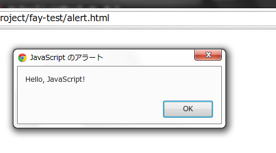
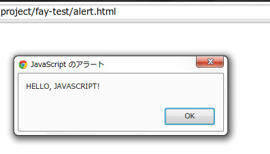
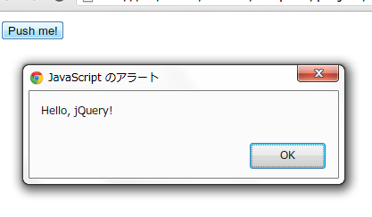

Introduction to Fay
Fay をいじってみたので、 せっかくだから記事を書いておこうと思います。 なお、Fayは新しい言語（というより、処理系と言った方が適切かな）ですので、 ここに書いてある情報は、来年か、あるいは半年後か、 それとももっとずっと早くに陳腐化する可能性がそれなりに低くないことを、 あらかじめお断りしておきます。 この記事執筆時に用いたFayのバージョンは、 fay-0.14.5.0 です。 ## デモ・前置き 特に何か作りたいものが有ったわけではなかったので、 今回作ってみたものは超どうでも良いツールです。 http://tanakh.jp/tools/sudden.html ＿人人人人人人＿ ＞ 突然の死 ＜ ￣YYYYY￣ こういうテキストを生成するだけのツールです。 * Fayのコード * HTMLコード これらのコンパイルなどもhakyllでまとめて管理できるようにしました。 hakyllには、ファイル変更監視による自動再コンパイル機能があるので、 変更の度に手でコンパイルしなくても良くて、 コンパイルコマンドを叩くのが面倒な人にも安心ですね。 * https://github.com/tanakh/tanakh.jp/blob/master/site.hs いくつかの、これよりは遙かにまともな例を、 このあたりから見つけることが出来ると思います。 https://github.com/faylang/fay/wiki#fay-in-the-wild あと、おそらくこちらの記事（日本語）も、 私の記事よりは、幾分充実したものだと思います。 http://blog.konn-san.com/article/20121225/fay-introduction ## Fay とは何か？ いわゆる一つの、JavaScriptをターゲットとする言語で、 Haskellの PROPER なサブセットになっています。 いくつかの当然の疑問とともに、Fayのアドバンテージを 最初に語っておこうかと思います。 * なんでこんなものが必要なのか JavaScriptでWebアプリを書きたくないから。 なぜなのかは、JavaScriptの代替言語が雨後のタケノコのように 乱立している昨今においては、あえて説明する必要はないかとも思います。 いくつかの理由は、以下のURLにて説明されていますが、 これが万人にとって賛同されるべきものなのかどうかは 私には分かりません。 The JavaScript Problem * なんでHaskellのサブセットなのか まず第一に、Haskellは良い言語であると言うこと。 第二に、Haskellは大きな言語であると言うこと。 第一の理由は、好み以外にありません。 Haskellが良い言語だと思わない人には、 わざわざFayを使う理由もないでしょう。 JavaScriptと比較してのHaskellの一番の特徴は、 リッチな型システムによって、静的な型検証が行われることだと思います。 第二の理由は深刻です。フルのHaskellを実装するのは大変だからです。 サブセットという選択肢にもいくつかのオプションがあるでしょう。 * フルのHaskellを実装する 難しいと言ったそばからですが、フルのHaskellをJavaScriptにコンパイルする というオプションも当然あります。 GHCJS は、GHCのバックエンドとしてJavaScriptを生成するものと、 JavaScriptで書かれたランタイムからなるアプローチをとっています。 フロントエンドにGHCを用いるとはいえ、ランタイムのほうには、 グリーンスレッドやSTMなど、やっかいな（だけど、とてつもなく便利な） 代物を実装する必要が依然としてあります。 Haste という 似たアプローチの別処理系もありますが、 こちらはより実装を軽くすることを目的としているようです。 UHC というHaskell処理系は最近ターゲット言語として、 JavaScriptをサポートしたようです。 しかし、そもそもUHC自体の機能がGHCより少ないのと、 インストールが面倒だというUHC自体を使うに当たる問題にぶち当たります。 フルHaskellがサポートされる処理系が出来れば、素晴らしいですが、 残念ながら今のところ、ちゃんと使えたり、楽に使えたりするものは なさそうなのが現状です。 * 全くの新しい言語を設計する Roy という言語は、 どことなくHaskellに似た、 Hindley-Milner型推論を持つ関数型言語です。 * Haskellと似て異なる言語を実装する Elm はかなりHaskell似た言語です。 でも、正格評価だったり、Reactive Programmingのための機能があったり、 似て異なる言語です。 おそらく、Fayが良いのは、Haskellの完全なサブセットだという所です。 Fayのコードは（Fayにバグがなければ）普通のHaskellとして動作します。 実際に型チェックにはGHCが用いられます。 ただ、表現に制限がかかるだけです。 似て異なる言語を覚えるのは、実際問題難しいとは言いませんが、 少なくとも私は、かなりの精神的負担と混乱を強いられると感じます。 その点、サブセットであるならば、変な挙動をして悩まされるということは、 あまりありません。 出来ないことを把握しておけば良くて、 出来ないことは、コンパイル時に判明するからです。 ## Fayの導入 Fayを導入するには、あらかじめ Haskell Platform を導入しておく必要があります。 リンク先にある、プラットフォーム毎の指示に従えば、 簡単にインストールできるはずです。 Haskell Platformがインストールされれば、fayの導入は簡単です。 ~ {.bash} $ cabal update $ cabal install fay fay-base ~ このコマンドを実行すれば、インストールは完了です。お疲れ様でした！ ## Fayの第一歩 とあるHaskell入門本では中盤まで登場しない「Hello, World!」ですが、 Haskellを知らない人がいきなりFayを勉強しようと思うとは思えないので、 今回はいきなり「Hello, World!」です。 書き忘れましたけど、Haskellの知識は前提とします。 ~ {.haskell} {-# LANGUAGE NoImplicitPrelude #-} import Prelude main :: Fay () main = putStrLn “Hello, Fay!” ~ 最初のLANGUAGEプラグマは、暗黙の
Preludeを用いないようにする指示です。
FayのPreludeはHaskell標準のPreludeのサブセットになっているので、
暗黙のPreludeを無効化しつつ、改めてimportする必要があります。
FayのPreludeにどのような関数が用意されているのかは、
fay-base のドキュメントを参照してください。
http://hackage.haskell.org/package/fay-base
このように、Haddockで普通のHaskellのパッケージと同様に
ドキュメントが参照できるのも、Haskellのサブセットであるところの
利点でもあります。
mainの型がIO ()でなくFay ()になっていることに注意してください。
FayにはIOはありません。
その代わりに何だかよく分からないFayモナドになっています。
あまり気にしてはいけません。
そのほかはいつも通りです。コンパイルして実行してみましょう。
~ {.bash}
$ fay hello.hs # hello.js が生成される
$ node hello.js
Hello, Fay!
至って普通です。ブラウザからも実行してしてみましょう。
コンパイル時に、--html-wrapperオプションを付けると、
HTMLファイルと、mainを起動するためのラッパコードが生成されます。
{.bash}
$ fay –html-wrapper hello.hs
$ ls hello.*
hello.hs hello.html hello.js
~
hello.html をブラウザから開けば、実行されます。
といっても、デフォルトでは標準出力はconsoleになってますので、
画面は真っ白だと思います。
Chromeなどのブラウザで、Ctrl+Shift+Iなどでデバッグコンソールを開き、
何かが出力されていることを確認してください。
## FayからJavaScriptを呼び出す
さて、これでFayのコードをJavaScriptにコンパイルして、
実行することが出来ましたが、
ブラウザで実行するのであれば、
DOMをいじれなければ、何の意味もありません。
あるいは、すでに豊富にあるJavaScriptのライブラリを
呼び出したいこともあるでしょう。
Fayには、JavaScriptを呼び出すための、
とてもシンプルで便利な方法が用意されています。
まずは、これもとてもありきたりですが、
alertでダイアログを表示させてみましょう。
~ {.haskell}
{-# LANGUAGE NoImplicitPrelude #-}
import FFI
import Prelude
alert :: String -> Fay ()
alert = ffi “alert(%1)”
main :: Fay ()
main = alert “Hello, JavaScript!”
ffiというのがJavaScript呼び出しを実現する関数です。
特殊構文でも何でもなく、ただの関数です。
このことが、とてもFayのFFIを扱いやすいものにしています。
ffiの第一引数には、任意のJavaScript文字列を与えることが出来ます。
プレースホルダを指定することが出来て、これによって、
任意に引数を与えたり、メソッド呼び出しを行うことが出来ます。
上の例では、alertの引数として、第一引数を渡すコードになっています。
これを--html-wrapper付きでコンパイルして、
ブラウザで表示させてみますと、次のように、
確かにalertを呼び出すことが出来ています。

一般的なHaskellのFFIのように、
FayのFFIも返り値はFayモナドにしますが、
副作用のない場合は、純粋な関数として扱うことも可能です。
例えば、文字列の大文字化を行うtoUpperCaseメソッドをFFIしてみましょう。
{.haskell}
{-# LANGUAGE NoImplicitPrelude #-}
import FFI
import Prelude
alert :: String -> Fay ()
alert = ffi “alert(%1)”
toUpperCase :: String -> String
toUpperCase = ffi “%1.toUpperCase()”
main :: Fay ()
main = alert . toUpperCase $ “Hello, JavaScript!”
~
これを実行すると、次のように、確かに大文字化されることが確認できます。

ffiの文字列中のプレースホルダが、
オブジェクトのメソッド呼び出しになっていることに注目してください。
このように、プレースホルダは、任意の位置に置くことが出来ます。
また、このコードは副作用を持ちませんので、
安全に純粋な関数として扱うことが出来ます。
ただし、一般的に安全かどうかは、もちろん実行するコードによります。
## jQueryを使う
ffiを用いると、どのようなJavaScriptのコードでも実行できますので、
がんばれば、何でも出来るということになります。
でも、がんばりたくないのです。せめて、jQueryが使えたら…。
という人のために、jQueryのFay-bindingである、
fay-jqueryというパッケージがあります。
インストールもとても簡単です。
~ {.bash}
$ cabal install fay-jquery
利用するときは、
{.bash}
$ fay –package fay-jquery hoge.hs
のように、fayコマンドの--packageオプションに渡します。
Fayのパッケージ管理は、いろいろ紆余曲折あったようですが、
“今のところ”、cabalでインストールして、
--packageオプションで指定するという形に落ち着いたようです。
さて、fay-jqueryパッケージの解説をしたいところですが、
私自身がいまいちjQueryに詳しくないので、解説は簡単なところに
とどめておくことにします。
より詳しくは、「突然の死」ジェネレータのソースコードや、
本家のドキュメント、
http://hackage.haskell.org/package/fay-jquery
をご参照ください。
まず、適当なHTMLを用意します。
{.html}
あやしいボタンが一個あるだけのページです。
その後に、作成予定のfayのコードを読み込ませるscriptタグを配置します。
jQueryをロードするのも忘れずに。
{.haskell}
{-# LANGUAGE NoImplicitPrelude #-}
import FFI
import JQuery
import Prelude
alert :: String -> Fay ()
alert = ffi “alert(%1)”
main :: Fay ()
main = do
select “#btn1” >>= onClick (_ev -> do
alert “Hello, jQuery!”
return False
)
return ()
selectでボタン要素を拾って、
それのonClickにalertを呼び出すハンドラを設定しているだけのコードです。
Haskellのコードが、イベントハンドラとして呼び出されます。
引数にはEvent型のいろいろ情報が詰まったものが渡されてきますが、
今回は無視しています。
さて、これをコンパイルして実行します。
今回はHTMLは自前で用意したので、間違えて
--html-wrapperを指定して上書きしてしまわないように注意します。
{.bash}
$ fay –package fay-jquery jq.hs # jq.js が生成される
~
先ほど用意した、jq.htmlをブラウザで開き、ボタンをクリックすると、

正しく、ハンドラが呼び出されました！
## まとめ
Fayを使ってみて、思っていたより便利だなあという印象です。
似て異なる言語を覚えなくて良いのは、想像以上に精神的に楽です。
パッケージ管理も割と良い感じです。
jQueryバインディングや、
DOM、SVGバインディングも
パッケージとして用意されています。
もっとも、これらは絶賛開発中で、
抜けているところがたくさんあります。
しかし、抜けているところがあったとしても、
ffi関数でわりとどうとでもなりそうだという安心感はあります。
Cinder という
Fay向けのうにょうにょ動くライブラリも開発されているみたいなので、
コミュニティーもそれなりに大きくなりつつあるのかなあという印象です。
というわけで、
* いわゆるJavaScript代替言語が欲しくて
* 静的型チェックがあるものが良くて
* Haskellが嫌いじゃなくて
* Haskellをすでに習得している人
にとっては、現状使えるツールとして、有望な選択肢だと思います。
皆さんも是非お試しください。
comments powered by Disqus